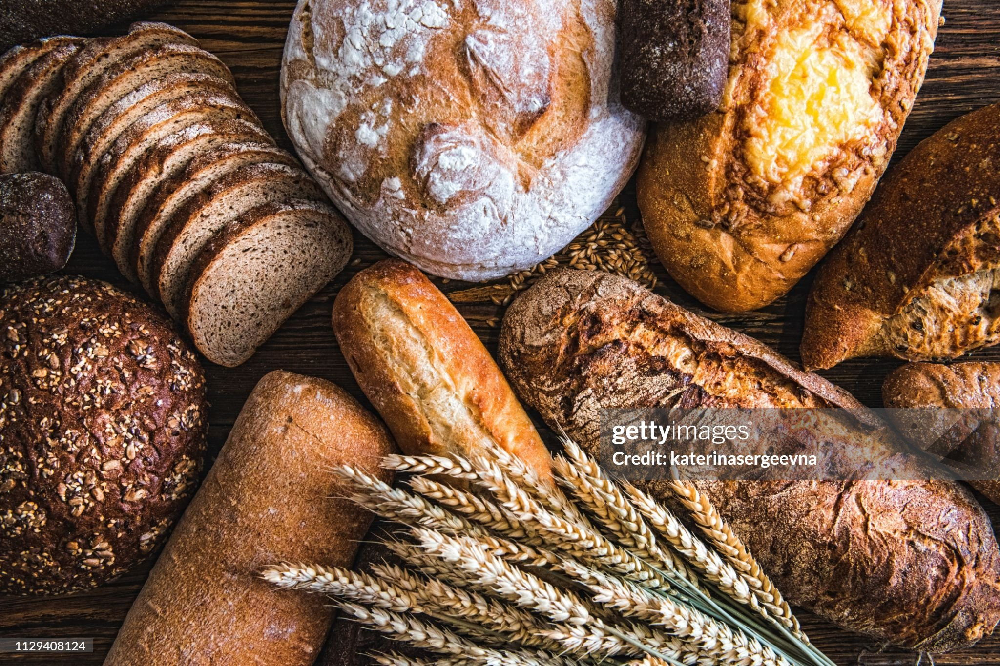

Freshly Baked Artisanal Bread Every Day
Welcome to OLIVE CRUST BAKERY, where we handcraft traditional sourdough, pastries, and daily specials using organic local ingredients.

Welcome to OLIVE CRUST BAKERY, where we handcraft traditional sourdough, pastries, and daily specials using organic local ingredients.
